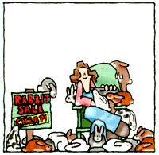
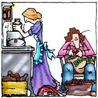
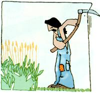

Mother Made Me Do It
Commentary on the early issues of Mother Earth News.
By Jim Schley
October/November 2003
A Vermont homesteader surveys three decades of MOTHER's wacky and wonderful ideas.
By Jim Schley; Illustrations by Jack Vaughan, from MOTHER's Archive
Ever considered cooking trout in a dishwasher (Issue No. 154)? Or a roast beef in a compost pile (No. 61)? What about stuffing a winter parka with milkweed or cattail fluff (No. (64) or constructing a garden greenhouse to the exact proportions of the Great Pyramid of Giza (No. 47)?
Where in the world could you find plans for a wood-burning refrigerator (No. 35), a jigsaw made from a treadle-powered sewing machine (No. 38), and a wind-powered battery charger that grade-school children can build (No. 138, 139); or learn how to build your own "hamdolin"-a mandolin made from a tin ham can-for a knee-slappin', homespun hootenanny (No. 91)?
Where else but in the pages of Mother Earth News magazine!
EXPLORING THE WACKY AND WONDERFUL
Like an impassioned combination of Thoreau's Walden with Popular Mechanics, The Boy Scout Handbook and The Anarchist's Cookbook, for an amazingly long time Mother Earth News has been one of America's folksiest, funkiest, most thought-provoking and useful publications.
As part of a research project last year, I had the unique experience of reading my way through three decades of back issues, beginning with the inaugural 1970 edition. I was astonished, entertained and frequently moved by the audacious ingenuity of MOTHER's legion of builders and inventors, gardeners and farmers, visionaries and rabble-rousers, with page after page of their eloquent testimonials to the challenges and pleasures of independent living, or as founders John and Jane Shuttleworth would say, "Making more and living better with less."
Although I don't recall the specific occasion, I'm sure I was introduced to the Mother Earth News by a stack of copies in somebody's outhouse "reading room."
AT THE HEART OF HOMESTEADING
In the late 1960s and early 70s, countless Americans in search of a hands-on, homemade life headed off the beaten track to find land of their own. In some areas these back-to-the-landers attempted to resuscitate rural communities and local economies with new approaches to agriculture and the revival of artisanal crafts and old-time skills. In 1970, the Mother Earth News planted its roots in this deliberate social and environmental movement.
In 1975, the year MOTHER celebrated her fifth birthday, I moved from Wisconsin to rural New England to attend college. In the long Connecticut River Valley that forms the border between New Hampshire and Vermont, I found a place to sink my own roots: a gorgeous, waterlush land of conifer forests, dramatically distinct seasons, and strong traditions of subsistence farming and logging.
D uring this time, I met scores of people who had built their own houses and who grew most of their own food. Some had dowsed and then dug their own wells. Many had milled lumber for their homes from trees that were hauled out of the forests by horses. And some produced their household electricity with small hydro-turbines, windspinners or photovoltaics. Even though many of these folks were former suburbanites like me, their energetic creativity meshed well with the longtime regional traditions of homesteading: seasonal cycles of work; hunting and foraging; cutting wood in the winter; sugaring in the spring; and growing and preserving fruit and vegetables.
Although I don't recall the specific occasion, I'm sure that I was introduced to the Mother Earth News by a stack of copies in somebody's outhouse "reading room." What I found there hit me like a revelation. My quirky north-country friends weren't the only ones merrily applying themselves to the task of reshaping and reviving conventional wisdom. This magazine was proof that across North America thousands (maybe millions) of people were doing likewise, in their own ways and regions.
What I loved in the Mother Earth News right away-and still do today-was the magazine's feisty pragmatism, its skepticism about consumerism, and its defiance of the presumption that what's best is the newest, latest thing.
The Shuttleworths were committed to publishing a magazine focused on presenting solutions in "down-to-earth, easily understood, easily duplicated, relevant terms." The sharing of ingenious ideas about how to live a joyous good life-how to grow your own food, build your own shelter, and use renewable and appropriate technologies with as little purchased labor, materials, energy and money as possible-no matter where you live, has remained at the root of Mother Earth News for more than 30 years. Homesteading is a metaphor for liberty, autonomy and inventive problem-solving-for whole-hearted engagement in the day-to-day necessities of life. Often gleefully amateurish (remember the etymological root of amateur is the Latin amator, "lover"), the pursuit of the good life is a labor of love, and one that MOTHER wholeheartedly embraces. Turn any one of her pages, and you'll find rapturous essays about the delights of eating organically, basking in the glow of solar heat, getting energized about solar electricity, coexisting with plant and animal pests, and finding joy by seeking your right livelihood.
But MOTHER balanced this much-vaunted innocence and idealism with a tough and seasoned practicality and countless examples of a daring, high-spirited intelligence-what William Shurcliff in an early issue of the Mother Earth News called lone-wolf innovation: the ability to resolve problems with elegant, practical solutions.
In No. 62 (1980), MOTHER reported on Jean Pain, a French farmer who made large compost piles with forestry trimmings and used the heat from the decomposing wood fibers to heat water, space-heat a drying shed, and generate methane, which was stored in inner tubes and then used to fuel the chipper that shredded his wood scraps to facilitate the composting process.
Leave it to MOTHER to go the extra mile: An enterprising team affiliated with the magazine built their own series of prototypes to test the viability of these composter-heater biofuel generators. They documented the results in great detail, down to schematic diagrams and charts tracking temperature gradients.
The effort expended to describe an individual's innovation and also to conduct ongoing tests and refinements illustrated a unique characteristic of the Mother Earth News. In the 1980s, MOTHER staffers and associates conducted an impressive research and development program, publishing their results in the magazine. Among their many projects, they developed workable models for passive-solar buildings, super-efficient and accessible garden designs, the biofueled "Shuttle Bug" and a woodburning truck. And they shared these innovations and ideas through workshops conducted at MOTHER's 622-acre Eco-Village near Etowah, North Carolina. (The Eco-Village operated as an educational center for renewable energy, sustainable building and organic gardening from 1979 to 1985; it is now private property.)
Alongside invention and innovation, MOTHER also acknowledged convention: Sometimes the best response to one of modern life's challenges is a solution our grandparents knew-one which would have been forgotten had not someone written about it in a letter or article in MOTHER.
Ah-ha! If you put your hot cast-iron Dutch oven in a wooden box packed with hay and clamp it shut tightly, the stew inside will cook for hours without any fire! [No. 38]
Rosanne Miller of Squaw Lake, Minnesota, wants to pass along her grandmother's method for cleaning silver. "Place your knives, forks and spoons in a container," Rosanne says, "and completely cover them with sour milk." (Rosanne's grandmother lived on a dairy farm). "After eight to ten hours, pour off the milk, rinse the silverware in cold water, rinse it again in hot water, and wipe the pieces dry. Your tableware should be gleaming now!" [No. 49]
CONVICTION AND COMMITMENT
Beyond the day-to-day hands-on, how-to -
foolproof ways to de-skunk a dog, relieve poison ivy or trap mice; a dozen ways to use the shell of an old water heater (compost tumbler, canning-bath tub, backup wood-burner and oven, solar batch heater); solutions for most of life's household problems with vinegar, baking soda, boron, salt and lemon juice...
-MOTHER explored the conundrums of environmental decision-making. Articles reflect their authors' long contemplated and deeply felt convictions, which sometimes elicited fierce debate in the letters and columns that followed.
Is the best ecological option to have a new, "clean," state-of-the-art car or truck (or wood stove, or computer) because of its improved efficiency, or rather to keep an older model in use and in good repair, since it already exists and may very well have been better made in the first place? Which approach would be more "sustainably correct"?
Many issues of MOTHER also offered major statements by essential thinkers, sometimes early on in their careers as prognosticators or prophets: farmer and writer Wendell Berry [No. 20], food activist Frances Moore Lappe [No. 74 and again in No. 192], botanist Wes Jackson [No. 149], African-American farm reformer Booker T. Whatley [No. 75], philosopher-farmer Masanobu Fukuoka [No. 76], and scientists Lynn Margulis and James Lovelock, originators of the Gaia Hypothesis [No. 99]. MOTHER'S legacy of providing a venue for visionary voices continues today with author and activist Barbara Kingsolver [No. 1931, environmentalist Lester Brown [No. 190 and 191], "authentic" foods activist and organic gardener Eliot Coleman [No. 189], and solar visionary Denis Hayes [No. 197].
MOTHER published a first draft of poet Gary Snyder's philosophical and practical musings, "Four Changes," in No. 1. With a breadth of vision characteristic of MOTHER's guest editorials, Snyder addresses the conditions of four main problems: Population, Pollution, Consumption and Transformation, and proposes specific, detailed actions:
"Position: Consumption is also a matter of balances and the problems that arise from excess ... '[Hu]man's use of dozens of 'resources' and their total dependence on certain of them (like dependence on fossil fuels) exhausts certain presences in the biosphere with incalculable results on the other members of the network: while rendering [hu]mankind vulnerable to the consequences of the loss of major supplies ...
Action: The community: Sharing and conserving; boycotting the wasteful ... If enough people refused to buy a new car for one year, it would permanently alter the American economy. Re-cycling clothes and equipment. Support local handicrafts. Learn to break the habit of too many unnecessary possessions-but avoid a self-abnegating anti-joyous self righteousness. Simplicity is light, carefree, neat, and loving-not a self-punishing ascetic trip ...
THE MORE THINGS CHANGE ...
Through the years, MOTHER has maintained a philosophy of focusing on solutions.
"I guess our greatest gift to the environmental movement is MOTHER's humanizing quality," said John Shuttleworth in a 1975 interview. "We refuse to be stuffy about the whole thing. We don't think that preserving the planet has to be a dose of bad medicine."
This positive approach makes all the difference. "A great number of conservation, ecology, and environmental publications that have failed were doomed from the start because their editors and publishers were what I call 'aginners.' They were only against things: strip mining, clear cutting, automobiles, freeways, oil spills, nuclear reactors, non-returnable containers ... the list goes on and on," said Shuttleworth. "Now I'm against all those things, too ... but it doesn't do a damn bit of good to just wring your hands in print from the first page to the last of issue after issue of a publication ... What folks want is some positive answers. Tell `em how to be for something."
My 10-year-old daughter recently pointed out that while some folks fret over how to poison dandelions, others gather them to eat. It's true: The same garden center that sells dandelion herbicides also sells seeds for growing dandelions to use in fashionable Mediterranean-style gourmet recipes. While MOTHER would prudently give warning of the hazards of herbicides, she also would tantalize and delight us with the very idea that lawn weeds such as lamb's quarter, clover, thistle, sorrel, and yes, dandelions, are delicious (No. 5, 14, 50, 175).
MOTHER makes no apologies about being for a delicious, juicy, good life, and has long sung the sweet song of the aesthetic and spiritual pleasures involved in shaping your life by your own hands.
MOTHER makes no apologies about being for a delicious, juicy, good life, and has long sung the sweet song of the aesthetic and spiritual pleasures involved in shaping your life by your own hands. Last year, because of MOTHER's inspiration, I resolved to accomplish all my grass-cutting with a handsome old scythe my brother-in-law found at a flea market. ("The Many Methods of Mowing," No. 190). This spring, I look forward to trying out a technique ("Grow Your Garden Up") from Mother No. 155: trellising cucumbers, giving them room to grow upward and lifting them up off the soil where they might be overlooked under leaves and vines. And who knows, maybe one of these days I'll pull a home-brewed beer (No. 147) out of my wood-fired refrigerator (No. 35), settle my bones on my cordwood-constructed porch (No. 198), and strum the delicate strings of my homemade hamdolin (No. 91).
And if neighbors look at me curiously, I'll just tell 'em that my MOTHER made me do it.
Jim Schley lives with his wife and daughter off the grid in central Vermont, on land owned cooperatively by six families. He is the former editor-in-chief of the book publisher Chelsea Green, and also has worked as a cook, carpenter and performer with several traveling theater troupes. He is the author of a chapbook of poems, One Another (Chapiteau Press, 1999; www.chapiteau.org ).
Mother Earth News
 Illustrations by Jack Vaughan, from MOTHER's Archive |
 |
|
|
|
 |
 |
|
|
|
|